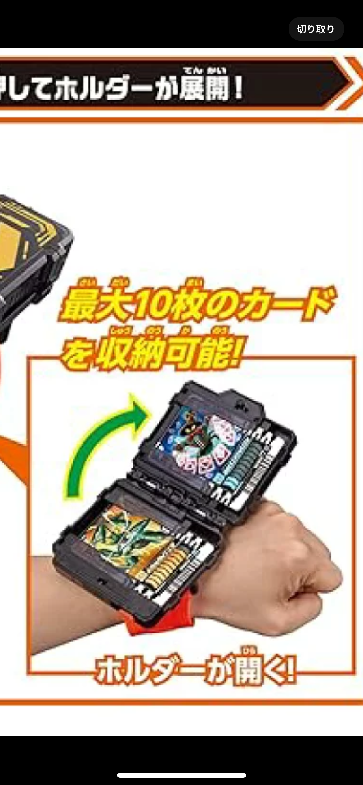

XBP_HPsample
観察
我々のは班で対象とすることにした人間の問題は
雨、片手が空いている、電車内が空いているという状況にも関わらず、
仁王立ちをしていたことから、潔癖症でつり革を触りたくない
ということだと推測した。
制作したプロトタイプ
説明
これを使えば、電車に設置されている誰がどんな手のコンディションで触ったか分からない
あの恐ろしいつり革に触らず、つり革の恩恵を受けることが出来ます！
なんとさらに‼ つり革上部のこの突起はばっちいかもしれないエレベーターなどの
ボタンを押すことが出来ます！！っとここまでは既存の売られている商品で行うことが出来ます。
そう！！！！！このプロトタイプの凄いところはこの真ん中の部分
なんとこのようにICカードをセットすることが出来るのです。
これによりいちいち財布やカード入れを出す必要が無くなり、とっても便利です。
設計においてはグリップ部分や引っかける部分の尖りを無くし、使う人や、周囲の人がが痛めたり、
けがをしないようにしました。
また、ICカードを入れる部分の構造は仮面ライダー玩具を参考にしました。

使用機材
３Dプリンター